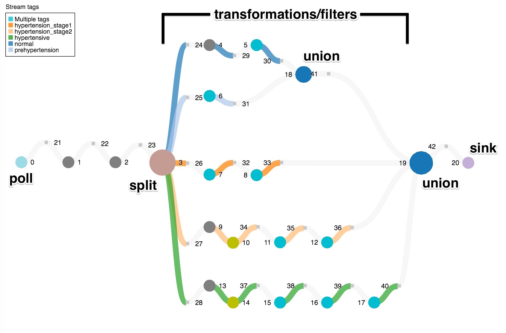

Edit me
In some cases, a developer might want to perform analytics taking into account the nature of the data. Say, for example, the data consists of log records each containing a level attribute. It would be logical to handle fatal log messages differently than info or debug messages. The same reasoning could also apply in the healthcare industry.
Suppose doctors at a hospital would like to monitor patients' states using a bedside heart monitor. They would like to apply different analytics to the monitor readings based on the severity category of the blood pressure readings. For instance, if a patient is in hypertensive crisis (due to extremely high blood pressure), the doctors may want to analyze the patient's heart rate to determine risk of a stroke.
In this instance, we can use split to separate blood pressure readings by category (five in total) and perform additional analytics on each of the resulting streams. After processing the data, we show how to define a new stream of alerts for each category and union the streams to create a stream containing all alerts.
Setting up the application
We assume that the environment has been set up following the steps outlined in the Getting started guide.
First, we need to define a class for a heart monitor. We generate random blood pressure readings, each consisting of the systolic pressure (the top number) and the diastolic pressure (the bottom number). For example, with a blood pressure of 115/75 (read as "115 over 75"), the systolic pressure is 115 and the diastolic pressure is 75. These two pressures are stored in a map, and each call to get() returns new values.
import java.util.HashMap;
import java.util.Map;
import java.util.Random;
import quarks.function.Supplier;
public class HeartMonitorSensor implements Supplier<Map<String,Integer>> {
private static final long serialVersionUID = 1L;
// Initial blood pressure
public Integer currentSystolic = 115;
public Integer currentDiastolic = 75;
Random rand;
public HeartMonitorSensor() {
rand = new Random();
}
/**
* Every call to this method returns a map containing a random systolic
* pressure and a random diastolic pressure.
*/
@Override
public Map<String, Integer> get() {
// Change the current pressure by some random amount between -2 and 2
Integer newSystolic = rand.nextInt(2 + 1 + 2) - 2 + currentSystolic;
currentSystolic = newSystolic;
Integer newDiastolic = rand.nextInt(2 + 1 + 2) - 2 + currentDiastolic;
currentDiastolic = newDiastolic;
Map<String, Integer> pressures = new HashMap<String, Integer>();
pressures.put("Systolic", currentSystolic);
pressures.put("Diastolic", currentDiastolic);
return pressures;
}
}
Now, let's start our application by creating a DirectProvider and Topology. We choose a DevelopmentProvider so that we can view the topology graph using the console URL. We have also created a HeartMonitor.
import java.util.HashSet;
import java.util.List;
import java.util.Map;
import java.util.Set;
import java.util.concurrent.TimeUnit;
import quarks.console.server.HttpServer;
import quarks.function.ToIntFunction;
import quarks.providers.development.DevelopmentProvider;
import quarks.providers.direct.DirectProvider;
import quarks.samples.utils.sensor.HeartMonitorSensor;
import quarks.topology.TStream;
import quarks.topology.Topology;
public class CombiningStreamsProcessingResults {
public static void main(String[] args) {
HeartMonitorSensor monitor = new HeartMonitorSensor();
DirectProvider dp = new DevelopmentProvider();
System.out.println(dp.getServices().getService(HttpServer.class).getConsoleUrl());
Topology top = dp.newTopology("heartMonitor");
// The rest of the code pieces belong here
}
}
Generating heart monitor sensor readings
The next step is to simulate a stream of readings. In our main(), we use the poll() method to generate a flow of tuples (readings), where each tuple arrives every millisecond. Unlikely readings are filtered out.
// Generate a stream of heart monitor readings
TStream<Map<String, Integer>> readings = top
.poll(monitor, 1, TimeUnit.MILLISECONDS)
.filter(tuple -> tuple.get("Systolic") > 50 && tuple.get("Diastolic") > 30)
.filter(tuple -> tuple.get("Systolic") < 200 && tuple.get("Diastolic") < 130);
Splitting the readings
We are now ready to split the readings stream by the blood pressure category. Let's look more closely at the method declaration of split below. For more details about split, refer to the Javadoc.
java.util.List<TStream<T>> split(int n, ToIntFunction<T> splitter)
split returns a List of TStream objects, where each item in the list is one of the resulting output streams. In this case, one stream in the list will contain a flow of tuples where the blood pressure reading belongs to one of the five blood pressure categories. Another stream will contain a flow of tuples where the blood pressure reading belongs to a different blood pressure category, and so on.
There are two input parameters. You must specify n, the number of output streams, as well as a splitter method. splitter processes each incoming tuple individually and determines on which of the output streams the tuple will be placed. In this method, you can break down your placement rules into different branches, where each branch returns an integer indicating the index of the output stream in the list.
Going back to our example, let's see how we can use split to achieve our goal. We pass in 6 as the first argument, as we want five output streams (i.e., a stream for each of the five different blood pressure categories) in addition one stream for invalid values. Our splitter method should then define how tuples will be placed on each of the five streams. We define a rule for each category, such that if the systolic and diastolic pressures of a reading fall in a certain range, then that reading belongs to a specific category. For example, if we are processing a tuple with a blood pressure reading of 150/95 (High Blood Pressure (Hypertension) Stage 1 category), then we return 2, meaning that the tuple will be placed in the stream at index 2 in the categories list. We follow a similar process for the other 4 categories, ordering the streams from lowest to highest severity.
List<TStream<Map<String, Integer>>> categories = readings.split(6, tuple -> {
int s = tuple.get("Systolic");
int d = tuple.get("Diastolic");
if (s < 120 && d < 80) {
// Normal
return 0;
} else if ((s >= 120 && s <= 139) || (d >= 80 && d <= 89)) {
// Prehypertension
return 1;
} else if ((s >= 140 && s <= 159) || (d >= 90 && d <= 99)) {
// High Blood Pressure (Hypertension) Stage 1
return 2;
} else if ((s >= 160 && s <= 179) || (d >= 100 && d <= 109)) {
// High Blood Pressure (Hypertension) Stage 2
return 3;
} else if (s >= 180 && d >= 110) {
// Hypertensive Crisis
return 4;
} else {
// Invalid
return -1;
}
});
Note that instead of split, we could have performed five different filter operations. However, split is favored for cleaner code and more efficient processing as each tuple is only analyzed once.
Applying different processing against the streams to generate alerts
At this point, we have 6 output streams, one for each blood pressure category and one for invalid values (which we will ignore). We can easily retrieve a stream by using the standard List operation get(). For instance, we can retrieve all heart monitor readings with a blood pressure reading in the Normal category by retrieving the TStream at index 0 as we defined previously. Similarly, we can retrieve the other streams associated with the other four categories. The streams are tagged so that we can easily locate them in the topology graph.
// Get each individual stream
TStream<Map<String, Integer>> normal = categories.get(0).tag("normal");
TStream<Map<String, Integer>> prehypertension = categories.get(1).tag("prehypertension");
TStream<Map<String, Integer>> hypertension_stage1 = categories.get(2).tag("hypertension_stage1");
TStream<Map<String, Integer>> hypertension_stage2 = categories.get(3).tag("hypertension_stage2");
TStream<Map<String, Integer>> hypertensive = categories.get(4).tag("hypertensive");
The hospital can then use these streams to perform analytics on each stream and generate alerts based on the blood pressure category. For this simple example, a different number of transformations/filters is applied to each stream (known as a processing pipeline) to illustrate that very different processing can be achieved that is specific to the category at hand.
// Category: Normal
TStream<String> normalAlerts = normal
.filter(tuple -> tuple.get("Systolic") > 80 && tuple.get("Diastolic") > 50)
.tag("normal")
.map(tuple -> {
return "All is normal. BP is " + tuple.get("Systolic") + "/" +
tuple.get("Diastolic") + ".\n"; })
.tag("normal");
// Category: Prehypertension category
TStream<String> prehypertensionAlerts = prehypertension
.map(tuple -> {
return "At high risk for developing hypertension. BP is " +
tuple.get("Systolic") + "/" + tuple.get("Diastolic") + ".\n"; })
.tag("prehypertension");
// Category: High Blood Pressure (Hypertension) Stage 1
TStream<String> hypertension_stage1Alerts = hypertension_stage1
.map(tuple -> {
return "Monitor closely, patient has high blood pressure. " +
"BP is " + tuple.get("Systolic") + "/" + tuple.get("Diastolic") + ".\n"; })
.tag("hypertension_stage1")
.modify(tuple -> "High Blood Pressure (Hypertension) Stage 1\n" + tuple)
.tag("hypertension_stage1");
// Category: High Blood Pressure (Hypertension) Stage 2
TStream<String> hypertension_stage2Alerts = hypertension_stage2
.filter(tuple -> tuple.get("Systolic") >= 170 && tuple.get("Diastolic") >= 105)
.tag("hypertension_stage2")
.peek(tuple ->
System.out.println("BP: " + tuple.get("Systolic") + "/" + tuple.get("Diastolic")))
.map(tuple -> {
return "Warning! Monitor closely, patient is at risk of a hypertensive crisis!\n"; })
.tag("hypertension_stage2")
.modify(tuple -> "High Blood Pressure (Hypertension) Stage 2\n" + tuple)
.tag("hypertension_stage2");
// Category: Hypertensive Crisis
TStream<String> hypertensiveAlerts = hypertensive
.filter(tuple -> tuple.get("Systolic") >= 180)
.tag("hypertensive")
.peek(tuple ->
System.out.println("BP: " + tuple.get("Systolic") + "/" + tuple.get("Diastolic")))
.map(tuple -> { return "Emergency! See to patient immediately!\n"; })
.tag("hypertensive")
.modify(tuple -> tuple.toUpperCase())
.tag("hypertensive")
.modify(tuple -> "Hypertensive Crisis!!!\n" + tuple)
.tag("hypertensive");
Combining the alert streams
At this point, we have five streams of alerts. Suppose the doctors are interested in seeing a combination of the Normal alerts and Prehypertension alerts. Or, suppose that they would like to see all of the alerts from all categories together. Here, union comes in handy. For more details about union, refer to the Javadoc.
There are two ways to define a union. You can either union a TStream with another TStream, or with a set of streams (Set<TStream<T>>). In both cases, a single TStream is returned containing the tuples that flow on the input stream(s).
Let's look at the first case, unioning a stream with a single stream. We can create a stream containing Normal alerts and Prehypertension alerts by unioning normalAlerts with prehypertensionAlerts.
// Additional processing for these streams could go here. In this case, union two streams
// to obtain a single stream containing alerts from the normal and prehypertension alert streams.
TStream<String> normalAndPrehypertensionAlerts = normalAlerts.union(prehypertensionAlerts);
We can also create a stream containing alerts from all categories by looking at the other case, unioning a stream with a set of streams. We'll first create a set of TStream objects containing the alerts from the other three categories.
// Set of streams containing alerts from the other categories
Set<TStream<String>> otherAlerts = new HashSet<>();
otherAlerts.add(hypertension_stage1Alerts);
otherAlerts.add(hypertension_stage2Alerts);
otherAlerts.add(hypertensiveAlerts);
We can then create an allAlerts stream by calling union on normalAndPrehypertensionAlerts and otherAlerts. allAlerts will contain all of the tuples from:
normalAlertsprehypertensionAlertshypertension_stage1Alertshypertension_stage2AlertshypertensiveAlerts
// Union a stream with a set of streams to obtain a single stream containing alerts from
// all alert streams
TStream<String> allAlerts = normalAndPrehypertensionAlerts.union(otherAlerts);
Finally, we can terminate the stream and print out all alerts.
// Terminate the stream by printing out alerts from all categories
allAlerts.sink(tuple -> System.out.println(tuple));
We end our application by submitting the Topology. Note that this application is available as a sample.
Observing the output
When the final application is run, the output looks something like the following:
BP: 176/111
High Blood Pressure (Hypertension) Stage 2
Warning! Monitor closely, patient is at risk of a hypertensive crisis!
BP: 178/111
High Blood Pressure (Hypertension) Stage 2
Warning! Monitor closely, patient is at risk of a hypertensive crisis!
BP: 180/110
Hypertensive Crisis!!!
EMERGENCY! SEE TO PATIENT IMMEDIATELY!
A look at the topology graph
Let's see what the topology graph looks like. We can view it using the console URL that was printed to standard output at the start of the application. Notice how the graph makes it easier to visualize the resulting flow of the application.
